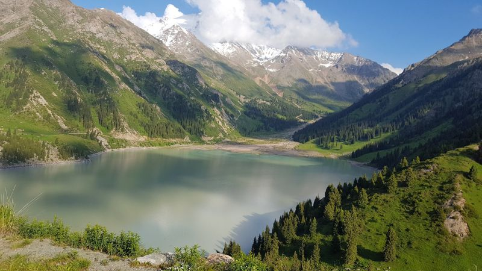
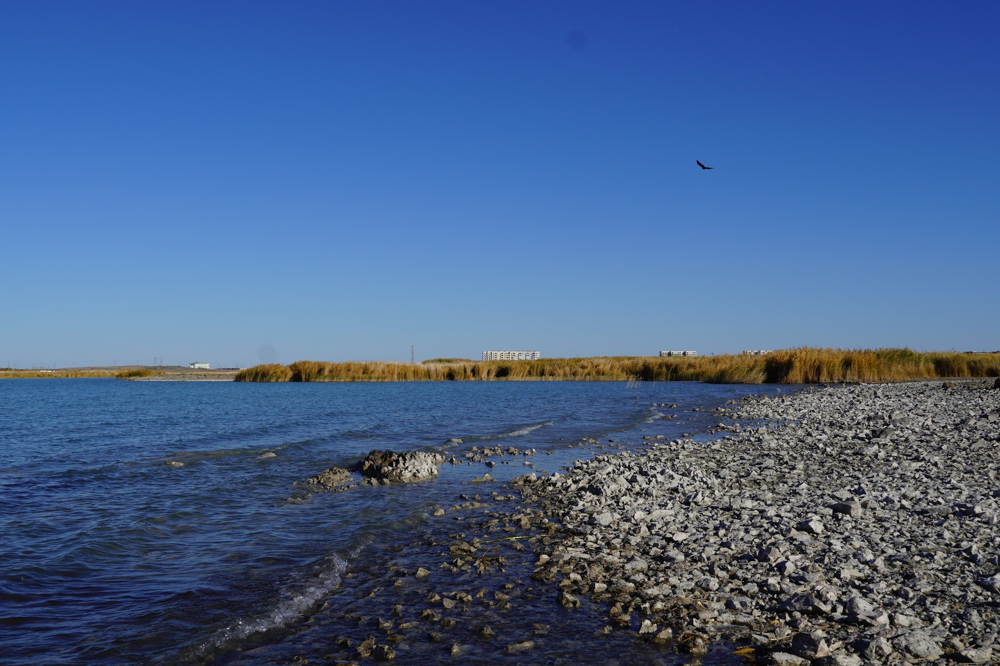

Поможет ли новый Водный кодекс справиться c дефицитом водных ресурсов в Казахстане?
Алмас Қайсар, Ирина Гумыркина
Действующий в Казахстане Водный кодекс был принят 20 лет назад – в 2003 году. За это время в него вносились правки более 70 раз. Министерство экологии и природных ресурсов считает, что он не отвечает требованиям времени, так как водные ресурсы в нем рассматриваются с точки зрения экономической выгоды, а вопросы водной безопасности и водосбережения не учитываются. В прошлом году президент страны поручил разработать новый Водный кодекс. Ожидалось, что проект кодекса будет внесен в парламент в первом полугодии 2023 года, однако документ по-прежнему находится на обсуждении. Власть поговорила с экспертами о том, сможет ли принятие нового кодекса изменить подходы к водной безопасности и водным ресурсам страны. Международный эксперт по управлению водными ресурсами и изменению климата, координатор Центрально-Азиатской платформы по водным ресурсам Булат Есекин считает, что обеспечение водной безопасности очень важно для Казахстана, так как страна находится в «аварийной зоне». «У нас сильное опустынивание, существует зависимость по воде от соседей, от климата. Земля становится обезвоженной. К нынешнему моменту водные проблемы лежат в основе всех остальных: засухи, наводнений, проблем с продовольствием и климатом. Мы своими хозяйственными действиями нарушили глобальные водные циклы. Поверхностные и подземные воды, небесные реки поддерживали равновесие, а мы стали забирать воду на ирригацию, ставить плотины и загрязнять, нарушили эти процессы. Мы видели, что в Италии была страшная засуха, когда правительство ввело режим ЧС, а затем сильнейшее наводнение, унесшее жизни. Водные циклы сломаны и мы должны их восстанавливать», — поясняет он. В пример нарушенного природного баланса он приводит трагедию с Аральским морем, в результате которого появилась пустыня Аралқұм - «язва в региональном масштабе». Такие же процессы происходят в других бассейнах региона. В Уральский бассейн не поступает вода - и исчезли осетровые; существует угроза иссушения Балхашского бассейна из-за «бесхозяйственного использования воды» и забора воды с китайской стороны. «Мы воду забираем на полив вообще бесплатно, за коробок спичек можно приобрести 30-40 тонн воды. Будет ли кто экономить воду для Балхаша? Кто будет ставить облицовочные каналы и систему учета (расхода воды- прим. В.)? При таких инструментах никакого водосбережения и эффективного использования воды не будет. Наши узаконенные и экономические инструменты, тарифы, стандарты, нормы стимулируют увеличение забора воды. Для водоканала выгодно, чтобы люди брали воду больше, - это их прибыль. Чтобы в канализацию сбрасывали больше - это же их прибыль. Мы своими действиями продолжаем убивать все живое. По всем прогнозам в Казахстане происходит очень жесткое опустынивание, до 50% будет дефицит воды. Разница между потребностями и наличием воды будет очень большая», — говорит эксперт. Эколог и эксперт общественной палаты мажилиса Айжан Скакова отмечает, что, помимо явного дефицита водных ресурсов в областях, которые занимаются сельским хозяйством, запасы воды почти исчерпаны в Туркестанской, Жамбылской и Кызылординских областях. Также проблемными остаются западные регионы страны. «Особый дефицит воды наблюдается именно в районах рек Сырдарья, Урал, Шу, Или и Талас. С учетом глобального потепления, аридной территории страны, которая подвержена засушливости на 60%, засух будет больше», — резюмирует она. По мнению Есекина, новый Водный кодекс при принятии правок и предложений должен искоренить существующие инструменты, которые стимулируют «разбазаривание воды». 5 мая 2022 года руководитель управления государственного контроля в области использования и охраны водного фонда комитета по водным ресурсам Минэкологии Марат Иманалиев отмечал, что «основным посылом нового Водного кодекса станет признание того, что вода – это основополагающий элемент окружающей природной среды, и вода необходима абсолютно во всех видах экономической деятельности человека». «В соответствии с этим акцентом будут пересмотрены все нормы, определяющие требования к использованию водных ресурсов и их охране, в том числе и в других законодательных актах», - пообещал он. В задачах, которые ставит новый документ, появляются такие понятия, как «водная безопасность» (как часть национальной безопасности) и «общенациональная политика водосбережения».
Разработка нового кодекса
Разработчики утверждают, что одним из важных новшеств является то, что общественность и научное сообщество будут принимать непосредственное участие в формировании государственной политики в сфере водной безопасности. НПО и все граждане смогут вносить свои предложения, а госорганы будут обязаны их учитывать. У всех водопользователей будет право доступа к информации о состоянии водного фонда. Они смогут создавать общественные объединения для участия в решении задач по охране и использованию водного фонда, входить в состав бассейновых советов. Инженер по водоснабжению и экоактивист Шерхан Сержан считает участие общественности в решении водных проблем страны важным шагом. «Появление в Водном кодексе термина заинтересованных лиц и заинтересованности общества в создании Водного кодекса - маленький, но очень важный шаг. Также при разработке того же Водного кодекса он выносился на всеобщее обсуждение, где большой объем вопросов рассматривался и экспертами, и разработчиками, вносились правки», — говорит Сержан. Однако Есекин, участвовавший в рабочей группе по созданию нового кодекса, отмечает, что существует несколько экспертных групп, и у всех разные предложения. «Нет целостного видения кодекса как алгоритма решения проблем, пока только фрагменты», — констатирует он. Айжан Скакова, которая также входит в рабочую группу, не видит, чтобы мнение населения и экспертов учитывалось при разработке нового кодекса. «Как и прежде, разработкой нового кодекса занимаются чиновники. Хорошо, если чиновники были в составе прошлых министерств или водного комитета, но должны быть местные независимые эксперты и международные эксперты», — говорит она. Фрагментированные предложения от экспертов и отсутствие согласия создает трудности при принятии решений.
Государственная политика в области мониторинга, контроля и науки
Новым кодексом предполагается, что государство будет вести мониторинг состояния дна, берегов, водоохранных зон и полос, количественных и качественных характеристик водных ресурсов в целом, а также их использования. На ее основе, а также научных исследований, будет вестись государственный учет водного фонда. Помимо этого, будет разработан национальный план интегрированного управления водными ресурсами и национальная информационная система водных ресурсов для того, чтобы информировать население и формировать цели, исходя из прогнозов водообеспеченности. Шерхан Сержан считает, что у Казахстана уже есть хорошая система по отслеживанию водных ресурсов - национальная гидрометеорологическая служба «Казгидромет». И если расширить информационную систему, добавив в нее информацию о бассейнах, реках, водохранилищах и озерах и сделать её общедоступной, это улучшит ситуацию с информированием населения о состоянии водных ресурсов и стимулированием к охране окружающей среды. «Однако я не уверен, как быстро она будет внедрена, потому что должен быть собран обширный объем данных. Это должны быть экологические посты и подразделения, которые должны этим заниматься. Должно быть соответствующее программное обеспечение и контроль местных, региональных и правительственных органов», — говорит он. В свою очередь Есекин добавляет, что очень важно вовлекать общественность в управление и информирование о состоянии водных ресурсов в их регионах. «Возьмите любого человека в Алматы и скажите, какая у него связь с Балхашом? Алматинцы живут в бассейне Балхаша, являются частью его живого организма. Как только Балхаш начнет высыхать, начнется необратимый процесс и он охватит всю Алматинскую область. Эти вещи люди должны понимать. Экономическая связь должна быть. Все эти механизмы работают во всем мире - по локализации, децентрализации управления, бассейнового управления и вовлечения людей в управление водой», — объясняет эксперт.
Тарифы, экономия воды и гидротехнические сооружения
В рамках политики водосбережения планируется внедрение ранжированных платежей за пользование поверхностными водными ресурсами и добычу подземных вод при использовании специальных сооружений (специальное водопользование - далее). Размер этих платежей будет стимулировать к эффективному и экономному отношению к водным ресурсам, поскольку ставка будет «высокой». Также государство будет субсидировать затраты водопользователей, внедряющих наилучшие технологии в области водосбережения. В Минэкологии отмечают, что сейчас водопользователи не заинтересованы в «экономической необходимости» применения водосберегающих технологий, а тарифы на подачу воды по каналам в Казахстане низкие. «Ранжирование тарифов и введение дополнительных коэффициентов - неплохой шаг. В Китае, например, повышая тарифы на забор воды крупными потребителями, они стимулируют их для поиска путей удлинения использования воды. Помимо прочего, изменение тарифов по регионам - хороший опыт, потому что на территории Казахстана неравномерно распределены водные ресурсы. Они находятся в восточной, северной и южной части, по местам базирования крупных рек - Или, Иртыш или другие крупные водохранилища. Нерациональное использование воды на территориях с хорошей обеспеченностью, не должно переходить в неконтролируемые режимы», — считает Сержан. Для специального водопользования необходимо будет получить соответствующее разрешение в бассейновой водной инспекции. В частности, его будут выдавать на добычу подземных вод в питьевых целях объемом более 5 кубометров в сутки. Также будут конкретизированы лимиты на изъятие водных ресурсов для обеспечения потребностей населения и отраслей экономики в воде. Они будут подразделяться на перспективные и оперативные. Перспективные будут определяться на трехлетний период, а оперативные - распределяться ежегодно. Все это будет производиться в зависимости от прогнозов водности рек, экологического и санитарно-эпидемиологического состояния водных объектов.
CONTACT
If you have suggestions, we welcome your input and encourage you to reach out to us.
Phone: +7(777)-777-77-77
Email: BIG4@environment.kz